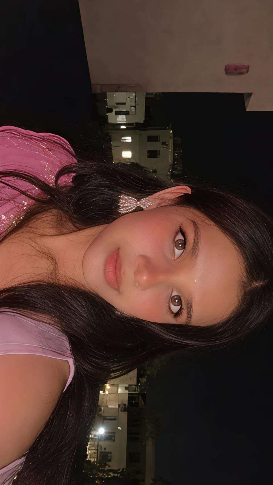

01 / THE QUIET MOMENT
There's a calmness in this one.
What I like here is how the whole picture feels unforced. The way you're sitting, the expression on your face, and the little details around your hair and outfit all come together naturally. It doesn't feel like you're trying too hard to make the picture work. It just does.
A quiet frame, a softer light,
and somehow, everything feels right.
and somehow, everything feels right.